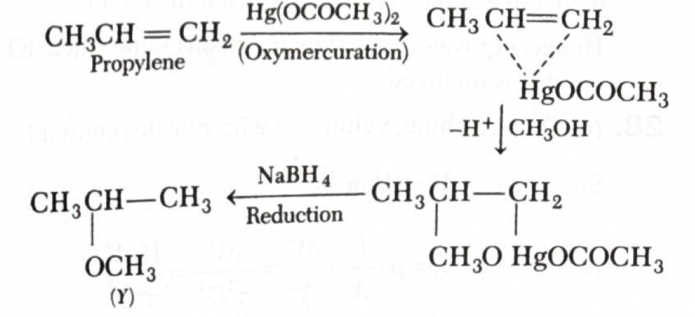
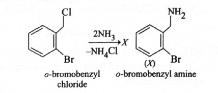
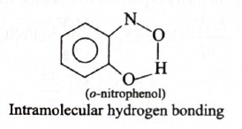
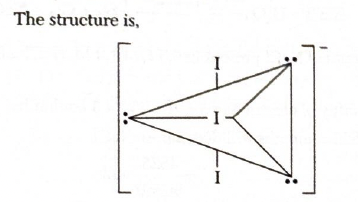

Quick explanation: For hydrogen atom, energy of
the \(n^{th}\) orbit is \(E_n = \dfrac{-R_H}{n^2}\). Since the
given energy is \(\dfrac{-R_H}{9}\), we get \(n^2 = 9\), so \(n
= 3\). Degeneracy of hydrogen atom for a shell is \(n^2\), hence
degeneracy \(= 9\).
Chapter / topic / subtopic:
Atomic Structure \(\rightarrow\) Bohr's Model of an Atom
\(\rightarrow\) Energy of electron in the nth orbit - Page
C20
Atomic Structure \(\rightarrow\) Quantum Numbers \(\rightarrow\)
Principal quantum number - Page C21
Solution: For hydrogen atom, the energy of
electron in the \(n^{th}\) orbit is: \(E_n = \dfrac{-R_H}{n^2}\)
Given energy: \(E = \dfrac{-R_H}{9}\)
Compare both expressions: \(\dfrac{-R_H}{n^2} =
\dfrac{-R_H}{9}\)
Therefore: \(n^2 = 9\)
So: \(n = 3\)
For \(n = 3\), possible values of \(l\) are \(0, 1, 2\).
These correspond to the subshells: \(3s\), \(3p\), and \(3d\).
Number of orbitals in these subshells:
\(3s = 1\)
\(3p = 3\)
\(3d = 5\)
Total number of orbitals: \(1 + 3 + 5 = 9\)
This is also directly given by the hydrogen atom degeneracy
formula: degeneracy \(= n^2 = 3^2 = 9\).
Final result: \((d)\ 9\)
Simple memory tip:
For hydrogen atom, energy depends only on \(n\), not on
\(l\).
Once you find \(n\), degeneracy is \(n^2\).
If energy denominator is \(9\), then \(n^2 = 9\), so
degeneracy is also \(9\).
Why the other options are wrong:
\(6\), \(8\), and \(5\) do not equal \(n^2\) for the given
energy level.
The correct shell is \(n = 3\), and the total number of
orbitals in this shell is \(9\).
Exam shortcut:
For hydrogen atom: \(E_n = \dfrac{-R_H}{n^2}\).
Given \(\dfrac{-R_H}{9}\), directly identify \(n^2 = 9\).
Degeneracy \(= n^2 = 9\).
Answer: \((b)\)
Quick explanation: The reagent
\(\mathrm{Hg(OCOCH_3)_2/CH_3OH}\), followed by
\(\mathrm{NaBH_4}\), gives alkoxymercuration-demercuration of an
alkene. Methoxy group \(\mathrm{-OCH_3}\) adds according to
Markovnikov rule, so propene gives
\(\mathrm{CH_3CH(OCH_3)CH_3}\).
Chapter / topic / subtopic:
Principles of Organic Chemistry and Hydrocarbons \(\rightarrow\)
Alkenes - Page C159
Principles of Organic Chemistry and Hydrocarbons \(\rightarrow\)
Chemical reactions of alkenes - Page C160
Organic Compounds with Functional Groups Containing Oxygen and
Nitrogen \(\rightarrow\) Ethers, Nomenclature and Classification
- Page C191
Organic Compounds with Functional Groups Containing Oxygen and
Nitrogen \(\rightarrow\) General Methods of Preparation - Page
C192
Solution:

The starting alkene is propene: \(\mathrm{CH_3CH=CH_2}\)
The reagents are: \(\mathrm{(CH_3COO)_2Hg, CH_3OH}\), followed
by \(\mathrm{NaBH_4}\).
This is alkoxymercuration-demercuration. It is similar to
oxymercuration-demercuration, but alcohol is used instead of
water.
Since the solvent is methanol, \(\mathrm{CH_3OH}\), the group
added to the alkene is \(\mathrm{-OCH_3}\).
The addition follows Markovnikov orientation. So
\(\mathrm{-OCH_3}\) goes to the more substituted carbon of the
double bond.
In propene, the middle carbon is more substituted than the
terminal \(\mathrm{CH_2}\) carbon.
Therefore, \(\mathrm{-OCH_3}\) attaches to the middle carbon and
hydrogen goes to the terminal carbon.
Final product: \(\mathrm{CH_3CH(OCH_3)CH_3}\)
This structure matches option \((b)\).
Final result: \((b)\)
Simple memory tip:
\(\mathrm{Hg(OAc)_2}\), alcohol, then \(\mathrm{NaBH_4}\)
means alkoxymercuration-demercuration.
Alcohol decides the \(\mathrm{-OR}\) group added.
Methanol gives \(\mathrm{-OCH_3}\).
Addition is Markovnikov, so \(\mathrm{-OCH_3}\) goes to the
more substituted carbon.
Why the other options are wrong:
Options containing acetate groups are intermediate-like or
wrong products; after \(\mathrm{NaBH_4}\),
mercury-containing/acetate part is removed.
The product should contain only the methoxy group added
across the double bond with Markovnikov orientation.
Quick explanation: In a cyclic process,
internal energy change is zero, so heat absorbed is equal to the
work done in magnitude. Work done in a \(pV\) diagram is the
area enclosed by the loop. Here the loop is a circle with
diameter \(25 - 5 = 20\), so radius \(= 10\), and area \(= \pi
r^2 = 100\pi\).
Chapter / topic / subtopic:
Thermodynamics \(\rightarrow\) Internal Energy, Heat and Work -
Page C42
Thermodynamics \(\rightarrow\) First Law of Thermodynamics -
Page C43
Solution: In a cyclic process, the system
returns to its initial state.
Therefore, the change in internal energy is: \(\Delta U = 0\)
According to the first law of thermodynamics: \(\Delta U =
\Delta q + \Delta W\)
Since \(\Delta U = 0\), heat absorbed is equal in magnitude to
the work done.
In a \(pV\) diagram, work done in one complete cycle is equal to
the area enclosed by the curve.
The given cyclic process forms a circle on the graph.
From the graph, the diameter of the circle is: \(25 - 5 = 20\)
Therefore, radius: \(r = \dfrac{20}{2} = 10\)
Area of the circle: \(\pi r^2 = \pi(10)^2 = 100\pi\)
Hence, heat absorbed: \(\Delta q = 100\pi J\)
Final result: \((d)\ 100\pi J\)
Simple memory tip:
For cyclic process, \(\Delta U = 0\).
In a \(pV\) graph, net work is area enclosed by the cycle.
If the loop is circular, use area \(= \pi r^2\).
Why the other options are wrong:
\(5\pi J\), \(15\pi J\), and \(25\pi J\) do not represent
the area of the circular loop.
The radius is \(10\), not \(5\), so the area is \(100\pi\),
not \(25\pi\).
Quick explanation: In acidic medium,
\(\mathrm{MnO_4^-}\) is reduced to \(\mathrm{Mn^{2+}}\), while
\(\mathrm{SO_2}\) is oxidised to \(\mathrm{HSO_4^-}\). Balancing
the two half-reactions by electrons gives \(2\mathrm{MnO_4^-}\)
reacting with \(5\mathrm{SO_2}\), so the stoichiometric
coefficient of \(\mathrm{SO_2}\) is \(5\).
Solution: First write the oxidation
half-reaction for \(\mathrm{SO_2}\): \(\mathrm{SO_2(g) +
2H_2O(l) \longrightarrow HSO_4^-(aq) + 3H^+(aq) + 2e^-}\)
Here sulphur in \(\mathrm{SO_2}\) is being oxidised, so
electrons are produced on the product side.
Now write the reduction half-reaction for permanganate in acidic
medium: \(\mathrm{MnO_4^-(aq) + 8H^+ + 5e^- \longrightarrow
Mn^{2+}(aq) + 4H_2O(l)}\)
Here manganese is reduced from \(+7\) in \(\mathrm{MnO_4^-}\) to
\(+2\) in \(\mathrm{Mn^{2+}}\), so \(5e^-\) are needed.
The oxidation half-reaction has \(2e^-\), and the reduction
half-reaction has \(5e^-\). To cancel electrons, multiply the
\(\mathrm{SO_2}\) half-reaction by \(5\) and the
\(\mathrm{MnO_4^-}\) half-reaction by \(2\).
After adding and simplifying, the balanced equation becomes:
\(\mathrm{2MnO_4^-(aq) + 5SO_2(g) + 2H_2O(l) + H^+(aq)
\longrightarrow 2Mn^{2+}(aq) + 5HSO_4^-(aq)}\)
Therefore, the stoichiometric coefficient of \(\mathrm{SO_2}\)
is \(5\).
Final result: \((a)\ 5\)
Simple memory tip:
In acidic medium, \(\mathrm{MnO_4^- \rightarrow Mn^{2+}}\)
always involves \(5e^-\).
Here \(\mathrm{SO_2 \rightarrow HSO_4^-}\) involves
\(2e^-\).
LCM of \(5\) and \(2\) is \(10\), so \(\mathrm{SO_2}\) half
needs to be multiplied by \(5\).
Why the other options are wrong:
\(4\), \(3\), and \(2\) do not balance the electron exchange
between \(\mathrm{MnO_4^-}\) and \(\mathrm{SO_2}\).
The electron-balancing step fixes the coefficient of
\(\mathrm{SO_2}\) as \(5\).
Exam shortcut:
Remember: \(\mathrm{MnO_4^- \rightarrow Mn^{2+}}\) in acid
uses \(5e^-\).
Cross-multiply electrons: coefficient of \(\mathrm{SO_2} =
5\).
Answer: \((b)\ 10\sqrt{\dfrac{h}{m}}\)
Quick explanation: Let the de-Broglie
wavelength be \(x\). Since wavelength is 100 times velocity, \(v
= \dfrac{x}{100}\). Using \(\lambda = \dfrac{h}{mv}\), we get
\(x = \dfrac{h}{m(x/100)}\), so \(x^2 = \dfrac{100h}{m}\), and
\(x = 10\sqrt{\dfrac{h}{m}}\).
Chapter / topic / subtopic:
Atomic Structure \(\rightarrow\) Dual Nature of Radiation and
Matter / De Broglie Concept - Page C20
Solution: Let the wavelength of the given
particle be \(x\).
Given that the wavelength is \(100\) times its velocity: \(x =
100v\)
Therefore: \(v = \dfrac{x}{100}\)
De-Broglie wavelength is given by: \(\lambda = \dfrac{h}{mv}\)
For de-Broglie questions, always begin with \(\lambda =
\dfrac{h}{mv}\).
If wavelength is related to velocity, use a temporary
variable like \(x\) to avoid confusion.
Here, \(x = 100v\), so \(v = \dfrac{x}{100}\).
Why the other options are wrong:
Options \((a)\), \((c)\), and \((d)\) have the wrong
placement of \(h\), \(m\), or the factor \(10\).
The final expression must increase with \(\sqrt{h}\) and
decrease with \(\sqrt{m}\), so \(10\sqrt{\dfrac{h}{m}}\) is
correct.
Exam shortcut:
Put \(\lambda = x\) and \(v = x/100\).
Then \(x = \dfrac{h}{m(x/100)}\).
So \(x^2 = \dfrac{100h}{m}\), hence \(x =
10\sqrt{\dfrac{h}{m}}\).
Answer: \((b)\ O^-\) changes into \(O^{2-}\)
Quick explanation: The second electron affinity
is positive because energy must be supplied to add an electron
to an already negative ion. When \(\mathrm{O^-}\) changes into
\(\mathrm{O^{2-}}\), the incoming electron is repelled by the
negative ion, so the process is endothermic.
Chapter / topic / subtopic:
Periodicity and Bonding \(\rightarrow\) Trend in Physical
Properties \(\rightarrow\) Electron gain enthalpy - Page C24
Periodicity and Bonding \(\rightarrow\) Trend in Physical
Properties \(\rightarrow\) Electron affinity - Page C25
Solution: Electron affinity is related to the
energy change when an atom or ion accepts an electron.
First electron addition to a neutral oxygen atom can be
represented as: \(\mathrm{O + e^- \longrightarrow O^-}\)
This first electron addition is generally favourable because
neutral oxygen attracts the incoming electron.
But second electron addition is: \(\mathrm{O^- + e^-
\longrightarrow O^{2-}}\)
Here, the incoming electron is being added to an already
negatively charged ion.
Since like charges repel, \(\mathrm{O^-}\) repels the incoming
electron.
Therefore, energy has to be supplied to force the electron into
the ion.
Hence, the process is endothermic, and the electron affinity
value is positive for: \(\mathrm{O^- \longrightarrow O^{2-}}\)
Final result: \((b)\ O^-\) changes into \(O^{2-}\)
Simple memory tip:
First electron addition to a neutral atom may release
energy.
Second electron addition to a negative ion needs energy.
Negative ion \(+\) electron means repulsion, so energy is
absorbed.
Why the other options are wrong:
\(\mathrm{O \rightarrow O^-}\) is first electron addition,
not the positive second electron affinity case.
\(\mathrm{O \rightarrow O^+}\) and \(\mathrm{O \rightarrow
O^{2+}}\) involve loss of electrons, not electron affinity.
Exam shortcut:
If the question asks when electron affinity is positive,
look for addition of an electron to an already negative ion.
Here that is \(\mathrm{O^- \rightarrow O^{2-}}\).
Answer: \((d)\ 800\ \mathrm{kJ/mol}\)
Quick explanation: Let bond dissociation energy
of \(X_2\) be \(a\). Then \(Y_2 = 0.5a\) and \(XY = a\). For
formation of \(XY\), use \(\dfrac{1}{2}X_2 + \dfrac{1}{2}Y_2
\rightarrow XY\) and \(\Delta H =\) bonds broken \(-\) bonds
formed. This gives \(-200 = \dfrac{a}{2} + \dfrac{0.5a}{2} -
a\), so \(a = 800\ \mathrm{kJ/mol}\).
Chapter / topic / subtopic:
Thermodynamics \(\rightarrow\) Hess's Law and Bond Energy - Page
C44
Thermodynamics \(\rightarrow\) Important Enthalpy Changes - Page
C43-C44
Solution: Let the bond dissociation energy of
\(X_2\) be: \(BE(X_2) = a\ \mathrm{kJ/mol}\)
Given ratio: \(X_2:Y_2:XY = 1:0.5:1\)
Therefore: \(BE(Y_2) = 0.5a\)
And: \(BE(XY) = a\)
Formation of \(XY\) from \(X_2\) and \(Y_2\) is:
\(\dfrac{1}{2}X_2 + \dfrac{1}{2}Y_2 \longrightarrow XY\)
Use the bond energy relation: \(\Delta H = \text{bond energy of
reactants broken} - \text{bond energy of product formed}\)
So: \(\Delta H = \dfrac{1}{2}BE(X_2) + \dfrac{1}{2}BE(Y_2) -
BE(XY)\)
Quick explanation: Stronger acid gives more
\(\mathrm{H^+}\), so it has lower pH. The acid strength order is
\(HCl > HCOOH > CH_3COOH\), so the pH order is the
reverse: \(CH_3COOH > HCOOH > HCl\).
Chapter / topic / subtopic:
Physical and Chemical Equilibria \(\rightarrow\) Basic Concepts
of Acids and Bases - Page C56
Physical and Chemical Equilibria \(\rightarrow\) Ionization of
Water and pH Scale - Page C57
Solution: The given acids are HCl,
\(CH_3COOH\), and HCOOH.
\(HCl\) is a strong acid, so it ionises almost completely in
water: \(\mathrm{HCl \rightarrow H^+ + Cl^-}\)
Because \(HCl\) gives the maximum concentration of
\(\mathrm{H^+}\), it has the lowest pH among the three.
HCOOH, formic acid, is a weak acid, but it is stronger than
acetic acid, \(CH_3COOH\).
So, the acid strength order is: \(HCl > HCOOH > CH_3COOH\)
pH works oppositely to acid strength. Stronger acid means lower
pH, and weaker acid means higher pH.
Therefore, the pH order is: \(CH_3COOH > HCOOH > HCl\)
Final result: \((c)\ CH_3COOH > HCOOH > HCl\)
Simple memory tip:
Strong acid \(\rightarrow\) more \(\mathrm{H^+}\)
\(\rightarrow\) lower pH.
HCl is strongest, so its pH is lowest.
HCOOH is stronger than \(CH_3COOH\), so HCOOH has lower pH
than \(CH_3COOH\).
Why the other options are wrong:
Option \((a)\) gives the acid-strength order, not the pH
order.
Option \((b)\) wrongly treats HCl and HCOOH as having equal
pH.
Option \((d)\) wrongly treats \(CH_3COOH\) and HCOOH as
having equal pH.
Exam shortcut:
First arrange acidity: \(HCl > HCOOH > CH_3COOH\).
Then reverse it for pH: \(CH_3COOH > HCOOH > HCl\).
Answer: \((a)\) 1.71, 1.40 and 1.36
Quick explanation: \(N^{3-}\), \(O^{2-}\), and
\(F^-\) are isoelectronic species, each having \(10\) electrons.
In an isoelectronic series, ionic radius decreases as nuclear
charge increases, so \(N^{3-} > O^{2-} > F^-\).
Chapter / topic / subtopic:
Periodicity and Bonding \(\rightarrow\) Trend in Physical
Properties \(\rightarrow\) Atomic radius - Page C23
Periodicity and Bonding \(\rightarrow\) Trend in Physical
Properties \(\rightarrow\) Nuclear charge - Page C24
Solution: First count the number of electrons
in each ion.
Nitrogen has atomic number \(7\), so: \(N^{3-}\) has \(7 + 3 =
10\) electrons.
Oxygen has atomic number \(8\), so: \(O^{2-}\) has \(8 + 2 =
10\) electrons.
Fluorine has atomic number \(9\), so: \(F^-\) has \(9 + 1 = 10\)
electrons.
Therefore, all three species are isoelectronic.
In an isoelectronic series, the number of electrons is the same,
but the number of protons is different.
Nuclear charge increases from nitrogen to oxygen to fluorine:
\(Z = 7,\ 8,\ 9\).
Greater nuclear charge pulls the same electron cloud more
strongly towards the nucleus.
Therefore, ionic radius decreases in the order: \(N^{3-} >
O^{2-} > F^-\)
Quick explanation: This is an acidic buffer, so
use Henderson equation: \(\mathrm{pH} = pK_a +
\log\dfrac{[\text{salt}]}{[\text{acid}]}\). Acetic acid
millimoles are \(20 \times 0.1 = 2\), and potassium acetate
millimoles are \(50x\). Substitution gives \(\log(25x) = 0.06\),
so \(x \approx 0.04\ M\).
Chapter / topic / subtopic:
Physical and Chemical Equilibria \(\rightarrow\) Buffer
Solutions - Page C58
Physical and Chemical Equilibria \(\rightarrow\) Ionization of
Water and pH Scale - Page C57
Physical and Chemical Equilibria \(\rightarrow\) Basic Concepts
of Acids and Bases - Page C56
Solution: Acetic acid and potassium acetate
form an acidic buffer.
For an acidic buffer, use: \(\mathrm{pH} = pK_a +
\log\dfrac{[\text{salt}]}{[\text{acid}]}\)
Let the concentration of potassium acetate solution be: \(x\ M\)
Millimoles of acetic acid: \(20 \times 0.1 = 2\
\mathrm{millimol}\)
Millimoles of potassium acetate: \(50 \times x = 50x\
\mathrm{millimol}\)
Given: \(\mathrm{pH} = 4.8\)
Also: \(K_a = 1.8 \times 10^{-5}\)
So: \(pK_a = -\log(1.8 \times 10^{-5}) \approx 4.74\)
Substitute in Henderson equation: \(4.8 = 4.74 +
\log\dfrac{50x}{2}\)
Therefore: \(4.8 - 4.74 = \log(25x)\)
So: \(\log(25x) = 0.06\)
Since \(10^{0.06}\) is approximately \(1.15\), we get: \(25x
\approx 1\)
Hence: \(x \approx \dfrac{1}{25} = 0.04\ M\)
Therefore, the concentration of potassium acetate is \(0.04\
M\).
In buffer numericals, use moles or millimoles, not just
molarity, when volumes are different.
Why the other options are wrong:
\(0.1\ M\), \(0.4\ M\), and \(0.02\ M\) do not satisfy the
given pH when used in the Henderson equation.
The volume of salt solution is \(50\ \mathrm{mL}\), so the
salt amount is \(50x\), not just \(x\).
Exam shortcut:
Acid millimoles \(= 20 \times 0.1 = 2\).
Salt millimoles \(= 50x\).
\(4.8 = 4.74 + \log\dfrac{50x}{2}\), so \(x \approx 0.04\
M\).
Answer: \((a)\) NaCl solution will show higher elevation of
boiling point.
Quick explanation: Elevation in boiling point
depends on the number of solute particles. \(58.5\ g\) NaCl is
\(1\ mol\), and \(180\ g\) glucose is also \(1\ mol\), but NaCl
dissociates into ions while glucose does not. Therefore, NaCl
solution has more particles and shows higher boiling point
elevation.
Chapter / topic / subtopic:
Physical and Chemical Equilibria \(\rightarrow\) Colligative
Properties - Page C52
Physical and Chemical Equilibria \(\rightarrow\) Abnormal Molar
Masses and van't Hoff Factor - Page C53
Solution: Elevation in boiling point is a
colligative property.
Colligative properties depend on the number of solute particles
present in solution, not on the chemical identity of the solute.
Moles of NaCl: \(\dfrac{58.5}{58.5} = 1\ \mathrm{mol}\)
Moles of glucose: \(\dfrac{180}{180} = 1\ \mathrm{mol}\)
Both are dissolved separately in \(1000\ \mathrm{mL}\) of water,
so both initially correspond to \(1\ M\) solution in this
comparison.
But NaCl is an electrolyte and dissociates in water:
\(\mathrm{NaCl \rightarrow Na^+ + Cl^-}\)
So \(1\) mole of NaCl gives approximately \(2\) moles of ions.
Glucose is a non-electrolyte. It does not dissociate into ions
in water.
So \(1\) mole of glucose gives only \(1\) mole of solute
particles.
Since NaCl solution has more effective solute particles, its
elevation in boiling point is higher.
Final result: \((a)\) NaCl solution will show higher elevation
of boiling point.
Simple memory tip:
For boiling point elevation, compare effective particles.
Glucose stays as molecules, so \(i = 1\).
NaCl gives two ions, so \(i \approx 2\).
More particles means greater elevation in boiling point.
Why the other options are wrong:
Glucose solution does not show higher elevation because it
does not dissociate.
Both solutions do not show equal elevation because NaCl
gives more particles.
None will show boiling point elevation is wrong because both
solutes elevate boiling point to some extent.
Therefore, NaCl has higher particle concentration and higher
\(\Delta T_b\).
Answer: \((a)\ 2\)
Quick explanation: The compound has two double
bonds, but only one double bond can show geometrical isomerism.
The terminal double bond \(\mathrm{-CH=CH_2}\) cannot show
geometrical isomerism because one carbon has two similar
hydrogen atoms.
Chapter / topic / subtopic:
Principles of Organic Chemistry and Hydrocarbons \(\rightarrow\)
Isomerism - Page C156
Principles of Organic Chemistry and Hydrocarbons \(\rightarrow\)
Alkenes - Page C159
Stereochemistry \(\rightarrow\) Types of Stereoisomerism - Page
C179
Solution: The given compound is:
\(\mathrm{CH_3CH=CH-CH=CH_2}\)
It contains two carbon-carbon double bonds.
For geometrical isomerism around a double bond, each carbon of
the double bond must have two different atoms or groups attached
to it.
In the terminal double bond \(\mathrm{-CH=CH_2}\), the terminal
carbon has two hydrogen atoms attached to it.
Since that carbon has two similar atoms, geometrical isomerism
is not possible around this double bond.
The other double bond has two different atoms or groups on each
double-bonded carbon, so geometrical isomerism is possible
around that double bond.
One double bond capable of geometrical isomerism gives two
forms: \(cis\) and \(trans\).
Hence, only two geometrical isomers are possible.
Final result: \((a)\ 2\)
Simple memory tip:
For \(cis\)-\(trans\) isomerism, check both carbons of the
double bond.
If even one double-bonded carbon has two identical groups,
that double bond cannot show geometrical isomerism.
A terminal alkene part like \(\mathrm{=CH_2}\) is a quick
clue: no geometrical isomerism there.
Why the other options are wrong:
\(3\), \(4\), and \(6\) overcount the number of
geometrically active double bonds.
Both double bonds are not eligible; only one double bond can
give geometrical isomers.
Exam shortcut:
Count only double bonds where both carbons have two
different groups.
Here only one double bond qualifies, so number of
geometrical isomers \(= 2\).
Answer: \((c)\)
Quick explanation: Benzyl halides are more
reactive than aryl halides towards nucleophilic substitution.
Therefore, ammonia reacts at the benzylic \(\mathrm{-CH_2Cl}\)
position, replacing chlorine by \(\mathrm{-NH_2}\), while the
aryl bromide remains unchanged.
Chapter / topic / subtopic:
Principles of Organic Chemistry and Hydrocarbons \(\rightarrow\)
Chemical Reactions of Alkyl Halides - Page C165
Principles of Organic Chemistry and Hydrocarbons \(\rightarrow\)
Arenes - Page C162
Organic Compounds with Functional Groups Containing Oxygen and
Nitrogen \(\rightarrow\) Amines - Page C199
Solution:

The given compound contains two halogen-containing parts:
Benzylic chloride group: \(\mathrm{-CH_2Cl}\)
Aryl bromide group: \(\mathrm{-Br}\) directly attached to
benzene
Benzyl halides are much more reactive towards nucleophilic
substitution than aryl halides.
The \(\mathrm{C-Cl}\) bond in the benzylic side chain is easier
to break because the benzyl intermediate or transition state is
stabilized by resonance with the benzene ring.
The aryl \(\mathrm{C-Br}\) bond is less reactive because the
halogen is directly attached to the benzene ring and has partial
double-bond character due to resonance.
Therefore, \(\mathrm{NH_3}\) attacks the benzylic
\(\mathrm{-CH_2Cl}\) part, not the aryl bromide part.
The reaction can be represented as:
\(\mathrm{o\text{-}BrC_6H_4CH_2Cl + 2NH_3 \longrightarrow
o\text{-}BrC_6H_4CH_2NH_2 + NH_4Cl}\)
Thus, the product is \(o\)-bromobenzyl amine.
This corresponds to option \((c)\).
Final result: \((c)\)
Simple memory tip:
Benzyl halide reacts easily; aryl halide is stubborn.
If a benzene compound has both \(\mathrm{-CH_2Cl}\) and aryl
\(\mathrm{-Br}\), ammonia attacks the \(\mathrm{-CH_2Cl}\)
side chain first.
Option \((a)\) replaces both halogen positions, which is not
the major reaction here.
Option \((b)\) replaces the aryl bromide but leaves benzyl
chloride unchanged, which is opposite to the expected
reactivity.
Option \((d)\) involves ethoxy substitution, but the
reacting nucleophile here is ammonia.
Exam shortcut:
Compare benzylic halide versus aryl halide.
Benzylic halide reacts faster in nucleophilic substitution.
Therefore, \(\mathrm{-CH_2Cl}\) changes to
\(\mathrm{-CH_2NH_2}\), while \(\mathrm{-Br}\) remains
unchanged.
Answer: \((d)\ 13.0\)
Quick explanation: Electrolysis of aqueous NaCl
produces NaOH in the solution. Charge passed is \(965 \times 5 =
4825\ C\), which corresponds to \(\dfrac{4825}{96500} = 0.05\
mol\) electrons, and hence \(0.05\ mol\) NaOH. In \(0.5\ L\),
this gives \(0.1\ M\) NaOH, so \(\mathrm{pOH}=1\) and
\(\mathrm{pH}=13\).
Chapter / topic / subtopic:
Electrochemistry \(\rightarrow\) Electrolytic cell and
electrolysis - Page C72
Electrochemistry \(\rightarrow\) Faraday's law of electrolysis -
Page C72
Electrochemistry \(\rightarrow\) Products of electrolysis - Page
C72
Solution: During electrolysis of aqueous NaCl,
the overall reaction can be represented as: \(\mathrm{NaCl +
H_2O \xrightarrow{electrolysis} \dfrac{1}{2}H_2 +
\dfrac{1}{2}Cl_2 + NaOH}\)
So, NaOH is formed in the solution, making the solution basic.
Amount of NaCl initially present in \(0.5\ L\) of \(1.0\ M\)
solution: \(0.5 \times 1.0 = 0.5\ mol\)
Quantity of electricity passed: \(Q = It = 5.0 \times 965 =
4825\ C\)
Moles of electrons passed: \(\dfrac{4825}{96500} = 0.05\ mol\)
The amount of NaCl decomposed corresponds to \(0.05\ mol\), so
NaOH formed in the solution is also \(0.05\ mol\).
Volume of solution: \(0.5\ L\)
Molarity of NaOH formed: \(\dfrac{0.05}{0.5} = 0.1\ M = 10^{-1}\
M\)
Therefore: \([\mathrm{OH^-}] = 10^{-1}\ M\)
So: \(\mathrm{pOH} = -\log(10^{-1}) = 1\)
Hence: \(\mathrm{pH} = 14 - 1 = 13\)
Final result: \((d)\ 13.0\)
Simple memory tip:
For electrolysis numericals, first calculate charge using
\(Q = It\).
Then convert charge to moles using \(F = 96500\ C\
mol^{-1}\).
Aqueous NaCl electrolysis leaves NaOH in solution, so the
solution becomes basic.
Why the other options are wrong:
\(1.0\) and \(1.30\) are acidic pH values, but NaOH is
formed, so the solution is basic.
\(12.7\) is close but does not match the calculated
\([\mathrm{OH^-}] = 0.1\ M\).
Exam shortcut:
\(965 \times 5 = 4825\ C\).
\(\dfrac{4825}{96500} = 0.05\ mol\) NaOH.
In \(0.5\ L\), \([OH^-] = 0.1\ M\), so pH \(=13\).
Answer: \((a)\ o\)-nitrophenol
Quick explanation: In \(o\)-nitrophenol, the
\(\mathrm{-OH}\) group and \(\mathrm{-NO_2}\) group are close
enough to form hydrogen bonding within the same molecule. This
produces a six-membered ring-like intramolecular hydrogen-bonded
structure.
Chapter / topic / subtopic:
Periodicity and Bonding \(\rightarrow\) Chemical Bonding
\(\rightarrow\) Hydrogen Bond - Page C37
Organic Compounds with Functional Groups Containing Oxygen and
Nitrogen \(\rightarrow\) Alcohols and Phenols Classification and
Nomenclature - Page C188
Organic Compounds with Functional Groups Containing Oxygen and
Nitrogen \(\rightarrow\) Chemical Properties of Phenols - Page
C190
Solution:

Hydrogen bonding can be intermolecular or intramolecular.
Intramolecular hydrogen bonding occurs within the same molecule
when a hydrogen-bond donor and acceptor are close to each other.
In \(o\)-nitrophenol, the \(\mathrm{-OH}\) group and the
\(\mathrm{-NO_2}\) group are present at adjacent positions on
the benzene ring.
The hydrogen of the \(\mathrm{O-H}\) group can form a hydrogen
bond with oxygen of the nitro group within the same molecule.
This forms a stable six-membered ring-like structure through
intramolecular hydrogen bonding.
In \(m\)-nitrophenol and \(p\)-nitrophenol, the groups are too
far apart for strong intramolecular hydrogen bonding.
Therefore, \(m\)-nitrophenol and \(p\)-nitrophenol mainly show
intermolecular hydrogen bonding.
Phenol also mainly forms intermolecular hydrogen bonding because
it does not have a nearby intramolecular acceptor group.
Hence, intramolecular hydrogen bonding is found in
\(o\)-nitrophenol.
Final result: \((a)\ o\)-nitrophenol
Simple memory tip:
Ortho means nearby, so intramolecular hydrogen bonding is
possible.
Meta and para are farther apart, so intermolecular hydrogen
bonding is more common.
\(o\)-nitrophenol is the classic example of intramolecular
hydrogen bonding.
Why the other options are wrong:
\(m\)-nitrophenol has groups too far apart for
intramolecular hydrogen bonding.
\(p\)-nitrophenol also cannot form the same internal
six-membered hydrogen-bonded ring.
Phenol lacks a nearby acceptor group within the same
molecule.
Exam shortcut:
For intramolecular hydrogen bonding in aromatic compounds,
look for ortho arrangement.
\(\mathrm{-OH}\) next to \(\mathrm{-NO_2}\) means
\(o\)-nitrophenol is the answer.
Answer: \((a)\ 0.625\ M\)
Quick explanation: In a \(H_2-O_2\) fuel cell,
water is the product. First calculate charge passed using \(Q =
It\), then use the relation \(4F\) produces \(2\) mol or \(36\
g\) of water. This gives about \(200\ g\) or \(200\ mL\) water,
and \(5g\) NaOH in \(200\ mL\) gives \(0.625\ M\).
Chapter / topic / subtopic:
Electrochemistry \(\rightarrow\) Different types of cells like
primary cells, secondary cells, fuel cells, concentration cells
- Page C70
Electrochemistry \(\rightarrow\) Faraday's law of electrolysis -
Page C72
States of Matter \(\rightarrow\) Mole Concept and Stoichiometry
- Page C3
Solution: The overall reaction of the
hydrogen-oxygen fuel cell is: \(\mathrm{2H_2 + O_2
\longrightarrow 2H_2O}\)
In this reaction, \(4F\) charge produces \(2\) mol of water.
\(2\) mol of water means: \(2 \times 18 = 36\ g\) water.
Quick explanation: In \(I_3^-\), the central
iodine has two bond pairs and three lone pairs, giving five
electron domains. This is treated as \(sp^3d\) hybridisation, so
it includes \(d\)-orbital contribution.
Chapter / topic / subtopic:
Periodicity and Bonding \(\rightarrow\) Chemical Bonding
\(\rightarrow\) Hybridization - Page C35
Periodicity and Bonding \(\rightarrow\) Chemical Bonding
\(\rightarrow\) Shapes of Molecule / VSEPR Theory - Page C35
Solution:

In \(I_3^-\), iodine is the central atom.
The central iodine has two bond pairs and three lone pairs.
Total electron domains around central iodine: \(2 + 3 = 5\)
Five electron domains correspond to \(sp^3d\) hybridisation.
Since \(sp^3d\) contains one \(d\)-orbital, \(I_3^-\) includes
\(d\)-orbital contribution in the hybridisation scheme.
The three lone pairs occupy equatorial positions, and the two
iodine atoms remain axial, so \(I_3^-\) is linear in shape.
\(PCl_3\) is \(sp^3\)-hybridised with one lone pair.
\(NO_3^-\) is \(sp^2\)-hybridised.
\(H_2Se\) is \(sp^3\)-hybridised with two lone pairs on
selenium.
Therefore, only \(I_3^-\) includes \(d\)-orbital contribution.
Final result: \((a)\ I_3^-\)
Simple memory tip:
Hybridisation with five electron domains is \(sp^3d\).
\(sp^3d\) means one \(d\)-orbital is included.
\(I_3^-\) is a classic linear \(sp^3d\) species with three
lone pairs.
Why the other options are wrong:
\(PCl_3\) has \(sp^3\) hybridisation, so no \(d\)-orbital is
needed.
\(NO_3^-\) is \(sp^2\), so it uses only \(s\) and \(p\)
orbitals.
\(H_2Se\) is \(sp^3\), with two lone pairs on selenium.
Exam shortcut:
Look for five electron domains around the central atom.
\(I_3^-\): \(2\) bond pairs \(+\ 3\) lone pairs \(= 5\).
So \(I_3^-\) is \(sp^3d\) and has \(d\)-orbital
contribution.
Answer: \((d)\ \mathrm{CH_3CH_2CHO}\)
Quick explanation: Aldol condensation requires
an aldehyde or ketone having an \(\alpha\)-hydrogen on a
saturated \(\alpha\)-carbon. \(\mathrm{CH_3CH_2CHO}\) has such
\(\alpha\)-hydrogens, so it undergoes self aldol condensation in
cold dilute alkali.
Chapter / topic / subtopic:
Organic Compounds with Functional Groups Containing Oxygen and
Nitrogen \(\rightarrow\) Aldehydes and Ketones - Page C193
Organic Compounds with Functional Groups Containing Oxygen and
Nitrogen \(\rightarrow\) Chemical Properties - Page C194
Organic Compounds with Functional Groups Containing Oxygen and
Nitrogen \(\rightarrow\) Miscellaneous Reactions - Page C196
Solution: Aldol condensation is shown by
aldehydes or ketones that contain at least one
\(\alpha\)-hydrogen.
The \(\alpha\)-carbon is the carbon next to the carbonyl carbon.
In \(\mathrm{CH_3CH_2CHO}\), the carbon next to
\(\mathrm{-CHO}\) is \(\mathrm{CH_2}\), which has
\(\alpha\)-hydrogens.
These \(\alpha\)-hydrogens can be abstracted by dilute alkali to
form an enolate/carbanion, which then attacks another aldehyde
molecule.
Although \(\mathrm{CH_2=CH-CHO}\) also contains an
\(\alpha\)-hydrogen, it is on an unsaturated system and is not
easily abstracted in the same way to give the normal self aldol
product.
\(\mathrm{CH \equiv C-CHO}\) does not behave as the required
saturated \(\alpha\)-hydrogen aldehyde for this reaction.
\(\mathrm{C_6H_5CHO}\), benzaldehyde, has no
\(\alpha\)-hydrogen, so it does not undergo self aldol
condensation.
Hence, the correct compound is \(\mathrm{CH_3CH_2CHO}\).
Final result: \((d)\ \mathrm{CH_3CH_2CHO}\)
Simple memory tip:
Aldol condensation needs \(\alpha\)-hydrogen.
The safest aldol candidates are aldehydes or ketones with
\(\alpha\)-hydrogen on a saturated carbon.
Benzaldehyde has no \(\alpha\)-hydrogen, so eliminate it
quickly.
Why the other options are wrong:
\(\mathrm{CH_2=CH-CHO}\) is an unsaturated aldehyde and does
not easily form the required carbanion for normal self aldol
condensation.
\(\mathrm{CH \equiv C-CHO}\) is also not the normal
saturated \(\alpha\)-hydrogen aldehyde for self aldol
condensation.
\(\mathrm{C_6H_5CHO}\) lacks \(\alpha\)-hydrogen.
Exam shortcut:
For aldol questions, first check for \(\alpha\)-hydrogen.
Then prefer the simple saturated aldehyde/ketone.
Here, \(\mathrm{CH_3CH_2CHO}\) is the clear answer.
Answer: \((d)\ 10.0\ mL\)
Quick explanation: In acidic medium, \(1\) mole
of \(\mathrm{MnO_4^-}\) reacts with \(5\) moles of
\(\mathrm{Fe^{2+}}\). Use the balanced redox ratio:
\(\dfrac{M_1V_1}{1} = \dfrac{M_2V_2}{5}\). Substitution gives
\(V_1 = 10.0\ mL\).
Chapter / topic / subtopic:
Electrochemistry \(\rightarrow\) Balancing of redox reactions
using ion-electron half-equation method - Page C64
Electrochemistry \(\rightarrow\) Introduction / Redox reactions
- Page C67
p-, d- and f-block Elements \(\rightarrow\) Potassium
Permanganate - Page C135
Solution: In acidic medium, permanganate ion
oxidises \(\mathrm{Fe^{2+}}\) to \(\mathrm{Fe^{3+}}\).
The balanced ionic equation is: \(\mathrm{MnO_4^- + 5Fe^{2+} +
8H^+ \longrightarrow Mn^{2+} + 5Fe^{3+} + 4H_2O}\)
From the balanced equation: \(1\ mol\ \mathrm{KMnO_4}\) reacts
with \(5\ mol\ \mathrm{FeSO_4}\).
Hence, volume of \(M/8\ \mathrm{KMnO_4}\) required is \(10.0\
mL\).
Final result: \((d)\ 10.0\ mL\)
Simple memory tip:
In acidic medium: \(\mathrm{MnO_4^-}\) reacts with
\(5\mathrm{Fe^{2+}}\).
Always include the \(1:5\) mole ratio before applying
molarity and volume.
Missing the factor \(5\) is the common trap here.
Why the other options are wrong:
\(8.0\ mL\), \(5.0\ mL\), and \(15.0\ mL\) do not satisfy
the balanced redox mole ratio of \(1:5\) between
\(\mathrm{KMnO_4}\) and \(\mathrm{FeSO_4}\).
The correct substitution gives \(10.0\ mL\).
Exam shortcut:
Use \(\mathrm{KMnO_4:FeSO_4 = 1:5}\) in acidic medium.
\(\dfrac{(1/8)V_1}{1} = \dfrac{(1/4)(25)}{5}\).
\(V_1 = 10.0\ mL\).
Answer: \((c)\) Riboflavin
Quick explanation: Riboflavin is vitamin
\(B_2\). Deficiency of riboflavin can cause cheilosis, which
means cracks at the corners of the mouth, along with digestive
disorders.
Quick explanation: \(S_N2\) reactions are
fastest when steric hindrance is least. Among the given alkyl
bromides, \(\mathrm{CH_3CH_2Br}\) is the least hindered primary
alkyl bromide, so it has the highest relative rate.
Chapter / topic / subtopic:
Principles of Organic Chemistry and Hydrocarbons \(\rightarrow\)
Chemical Reactions of Alkyl Halides - Page C165
Principles of Organic Chemistry and Hydrocarbons \(\rightarrow\)
General Organic Chemistry / Reaction mechanism - Page C156
Solution: The given reaction is an \(S_N2\)
substitution reaction.
In an \(S_N2\) reaction, the nucleophile attacks the carbon
bearing the leaving group from the backside.
Because backside attack is needed, crowding around the reacting
carbon slows the reaction.
So, the \(S_N2\) rate order mainly follows steric hindrance:
methyl \(>\) primary \(>\) secondary \(>\) tertiary.
Among the given options, \(\mathrm{CH_3CH_2Br}\) has the least
steric hindrance around the carbon attached to bromine.
Therefore, \(\mathrm{CH_3CH_2Br}\) has the highest relative rate
for the \(S_N2\) reaction.
More branched alkyl bromides are slower because bulky groups
block the nucleophile from attacking the carbon easily.
Final result: \((c)\ \mathrm{CH_3CH_2Br}\)
Simple memory tip:
\(S_N2\) means backside attack.
Backside attack hates crowding.
Less branching near \(\mathrm{C-Br}\) means faster \(S_N2\).
Why the other options are wrong:
Branched primary alkyl bromides are slower than ethyl
bromide because they have more steric hindrance.
The most crowded option has the lowest \(S_N2\) tendency
among these choices.
\(\mathrm{CH_3CH_2Br}\) is the least hindered option, so it
reacts fastest.
Exam shortcut:
For \(S_N2\), choose the least bulky alkyl halide.
Here, \(\mathrm{CH_3CH_2Br}\) is least hindered, so it has
the highest rate.
Quick explanation: In the balanced reaction,
\(1\) mole of \(O_2\) forms \(2\) moles of \(SO_3\). So the rate
of appearance of \(SO_3\) is twice the rate of disappearance of
\(O_2\).
Chapter / topic / subtopic:
Chemical Kinetics \(\rightarrow\) Introduction to Chemical
Kinetics - Page C79
Chemical Kinetics \(\rightarrow\) Units of rate of reaction -
Page C79
Chemical Kinetics \(\rightarrow\) Rate expression and rate
constant - Page C79
Solution: Given reaction: \(\mathrm{2SO_2 + O_2
\rightleftharpoons 2SO_3}\)
For a balanced chemical reaction, rates are related using
stoichiometric coefficients.
The rate relation is: \(\mathrm{Rate\ of\ reaction} =
-\dfrac{1}{2}\dfrac{d[SO_2]}{dt} = -\dfrac{d[O_2]}{dt} =
\dfrac{1}{2}\dfrac{d[SO_3]}{dt}\)
Final result: \((b)\ 4 \times 10^{-4}\ mol\ L^{-1}\ s^{-1}\)
Simple memory tip:
Rate of disappearance of reactant is negative because
reactant concentration decreases.
Rate of appearance of product is positive because product
concentration increases.
Always use the balanced equation coefficients to compare
rates.
Why the other options are wrong:
\(2 \times 10^{-4}\) ignores that \(2SO_3\) forms for every
\(1O_2\) consumed.
\(1 \times 10^{-1}\) is much too large and does not follow
the stoichiometric relation.
\(6 \times 10^{-4}\) wrongly uses a factor of \(3\), which
is not present in the \(O_2:SO_3\) ratio.
Exam shortcut:
\(O_2:SO_3 = 1:2\).
So rate of \(SO_3\) appearance \(= 2 \times\) rate of
\(O_2\) disappearance.
\(2 \times 2 \times 10^{-4} = 4 \times 10^{-4}\).
Answer: \((d)\ 311.15\ K\)
Quick explanation: For a first-order reaction,
\(t_{1/2} = \dfrac{0.693}{k}\). With \(t_{1/2} = 600\ s\), \(k
\approx 1.1 \times 10^{-3}\ s^{-1}\). Then use Arrhenius
equation \(\log k = \log A - \dfrac{E_a}{2.303RT}\) to get \(T =
311.15\ K\).
Chapter / topic / subtopic:
Chemical Kinetics \(\rightarrow\) Rate constant - Page C80
Chemical Kinetics \(\rightarrow\) Integrated rate laws for
reaction of zero and first order - Page C80
Chemical Kinetics \(\rightarrow\) Arrhenius theory and effect of
temperature - Page C81
Solution: For a first-order reaction: \(t_{1/2}
= \dfrac{0.693}{k}\)
Given half-life: \(t_{1/2} = 10\ min = 600\ s\)
Therefore: \(k = \dfrac{0.693}{600}\)
So: \(k \approx 1.1 \times 10^{-3}\ s^{-1}\)
According to Arrhenius equation: \(k = Ae^{-E_a/RT}\)
Taking common log form: \(\log k = \log A -
\dfrac{E_a}{2.303RT}\)